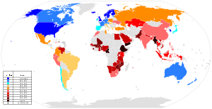

The World Wide Web (abbreviated WWW or the Web) is an information space where documents and other web resources are identified by Uniform Resource Locators (URLs), interlinked by hypertext links, and can be accessed via the Internet.[1] English scientist Tim Berners-Lee invented the World Wide Web in 1989. He wrote the first web browser computer program in 1990 while employed at CERN in Switzerland.[2][3] The Web browser was released outside of CERN in 1991, first to other research institutions starting in January 1991 and to the general public on the Internet in August 1991.
The World Wide Web has been central to the development of the Information Age and is the primary tool billions of people use to interact on the Internet.[4][5][6] Web pages are primarily text documents formatted and annotated with Hypertext Markup Language (HTML). In addition to formatted text, web pages may contain images, video, audio, and software components that are rendered in the user's web browser as coherent pages of multimedia content.
The Internet has no centralized governance in either technological implementation or policies for access and usage; each constituent network sets its own policies.[3] Only the overreaching definitions of the two principal name spaces in the Internet, the Internet Protocol address (IP address) space and the Domain Name System (DNS), are directed by a maintainer organization, the Internet Corporation for Assigned Names and Numbers (ICANN). The technical underpinning and standardization of the core protocols is an activity of the Internet Engineering Task Force (IETF), a non-profit organization of loosely affiliated international participants that anyone may associate with by contributing technical expertise.[4]
The Internet has no centralized governance in either technological implementation or policies for access and usage; each constituent network sets its own policies.[3] Only the overreaching definitions of the two principal name spaces in the Internet, the Internet Protocol address (IP address) space and the Domain Name System (DNS), are directed by a maintainer organization, the Internet Corporation for Assigned Names and Numbers (ICANN). The technical underpinning and standardization of the core protocols is an activity of the Internet Engineering Task Force (IETF), a non-profit organization of loosely affiliated international participants that anyone may associate with by contributing technical expertise.[4]